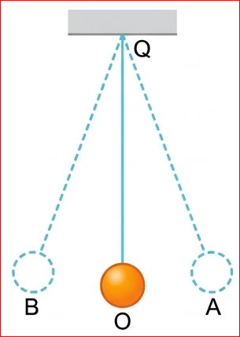
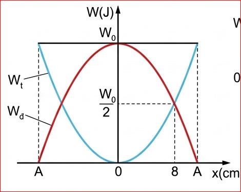
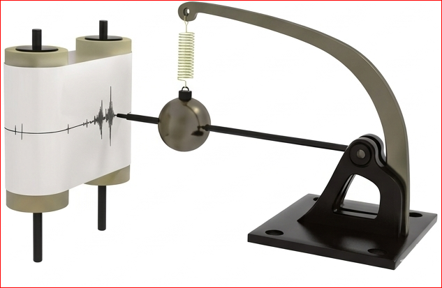
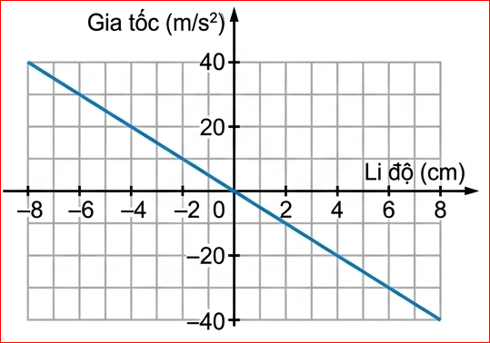
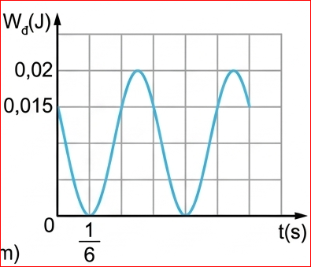

Chương 1: Dao động điều hoà
Ví dụ 1:
Một con lắc đơn gồm vật nặng có khối lượng m, treo ở đầu một sợi dây mềm không giãn có độ dài \( l \) và có khối lượng không đáng kể. Đưa vật nặng ra khỏi vị trí cân bằng O sao cho dây treo hợp với QO một góc \( \alpha_0 \) (\( \alpha_0 \le 10^\circ \)) rồi thả nhẹ cho con lắc dao động điều hoà trên cung tròn AOB.
a) Tính thế năng của con lắc; động năng của vật ở các vị trí A, O, B và vị trí bất kì (li độ góc \( \alpha \)).
b) Ở vị trí nào động năng bằng thế năng?

Giải:
a) Chọn mốc tính thế năng tại vị trí cân bằng O:
b) Khi \( W_d = W_t \), theo bảo toàn cơ năng: \( W = 2W_t \)
\( \implies mgl\frac{\alpha_0^2}{2} = 2mgl\frac{\alpha^2}{2} \implies \alpha = \pm\frac{\alpha_0}{\sqrt{2}} \).
Ví dụ 2:
Một vật có khối lượng \( m=200 \) g dao động điều hoà với tần số góc \( \omega=2\pi \) rad/s, biên độ \( A=10 \) cm. Xác định thế năng của con lắc tại thời điểm vật có tốc độ \( v=10 \) cm/s.
Giải:
Áp dụng định luật bảo toàn cơ năng:
\( W_t = W - W_d = \frac{1}{2}m\omega^2A^2 - \frac{1}{2}mv^2 = \frac{m}{2}(\omega^2A^2 - v^2) \)
Thay số (\( m=0,2kg, A=0,1m, v=0,1m/s, \pi^2 \approx 10 \)):
\( W_t = \frac{0,2}{2} ((2\pi)^2 \cdot 0,1^2 - 0,1^2) = 0,1 (4 \cdot 10 \cdot 0,01 - 0,01) = 0,1 (0,4 - 0,01) = 0,039 \) J.
(Lưu ý: Kết quả trong tài liệu có thể sai lệch nhỏ do cách lấy xấp xỉ \(\pi^2\))
Ví dụ 3:
Một con lắc lò xo có độ cứng \( k=100 \) N/m dao động điều hoà. Đồ thị biểu diễn sự phụ thuộc của thế năng \( W_t \) và động năng \( W_d \) vào li độ \( x \) như Hình 7.2. Tính \( W_0 \).

Giải:
Từ đồ thị, khi \( x = 8 \) cm \( = 0,08 \) m, ta thấy đường \( W_d \) và \( W_t \) giao nhau, nghĩa là \( W_d = W_t \).
\( \implies W_0 = 2W_t = 2 \cdot \frac{1}{2} k x^2 = 100 \cdot (0,08)^2 = 0,64 \) J.
Câu 1: Máy đo địa chấn đơn giản (Hình 7.3). Sóng địa chấn có tần số \( 30 \text{ Hz} \) đến \( 40 \text{ Hz} \). Hãy giải thích tại sao tần số riêng của hệ phải có giá trị nhỏ hơn tần số này rất nhiều.

Khi tần số cưỡng bức (sóng địa chấn) rất lớn so với tần số riêng, vật nặng sẽ hầu như đứng yên do quán tính, trong khi khung máy rung theo đất. Điều này giúp bút vẽ ghi lại chính xác biên độ dao động của mặt đất.
Câu 2: Đồ thị Hình 7.4 mô tả mối liên hệ giữa gia tốc và li độ. Sử dụng số liệu để tính tần số của dao động.

Ta có: \( a = -\omega^2 x \). Từ đồ thị, tại \( x = 8 \text{ cm} = 0,08 \text{ m} \), \( a = -40 \text{ m/s}^2 \).
\( \implies \omega^2 = \left| \frac{a}{x} \right| = \frac{40}{0,08} = 500 \)
\( \implies \omega = \sqrt{500} = 10\sqrt{5} \approx 22,36 \text{ rad/s} \).
\( \implies f = \frac{\omega}{2\pi} \approx 3,56 \text{ Hz} \).
Câu 3: Hình 7.5 là đồ thị động năng theo thời gian của vật \( m = 0,4 \text{ kg} \). Tại \( t=0 \) vật chuyển động theo chiều dương. Viết phương trình dao động.

1. Từ đồ thị: \( W_{dmax} = 0,02 \text{ J} \implies \frac{1}{2}m\omega^2A^2 = 0,02 \).
2. Chu kỳ động năng \( T' = 2 \cdot \frac{1}{6} = \frac{1}{3} \text{ s} \implies T = 2T' = \frac{2}{3} \text{ s} \implies \omega = 3\pi \text{ rad/s} \).
3. Tính \( A \): \( 0,5 \cdot 0,4 \cdot (3\pi)^2 \cdot A^2 = 0,02 \implies 0,2 \cdot 90 \cdot A^2 = 0,02 \implies A = \frac{1}{30} \text{ m} = \frac{10}{3} \text{ cm} \).
4. Pha ban đầu: Tại \( t=0 \), \( W_d = 0,015 = \frac{3}{4}W_{dmax} \implies v = \pm \frac{\sqrt{3}}{2}v_{max} \). Vì vật đang đi theo chiều dương nên \( \phi = -\pi/6 \).
PT: \( x = \frac{10}{3} \cos(3\pi t - \pi/6) \text{ cm} \).
Câu 4: Vật có khối lượng m dao động điều hòa với biên độ A và tần số góc \(\omega\)
a) Khi \( x = A/2 \), động năng và thế năng chiếm bao nhiêu % cơ năng?
b) Tại li độ nào thì \( W_t = W_d \)?
a) Khi \( x = A/2 \implies W_t = \frac{1}{4}W = 25\% \). Suy ra \( W_d = 75\% \).
b) Khi \( W_t = W_d \implies W = 2W_t \implies \frac{1}{2}kA^2 = 2 \cdot \frac{1}{2}kx^2 \implies x = \pm \frac{A}{\sqrt{2}} \).
Cách xác định các đại lượng vận tốc, gia tốc, năng lượng, động năng, thế năng,... khi biết phương trình hoặc đồ thị của vật dao động điều hoà và ngược lại.
Phân tích được sự chuyển hoá năng lượng trong dao động điều hoà trong một số bài tập cụ thể.
Câu 1: Một vật dao động điều hoà, khi vật đi từ VTCB ra biên thì:
Câu 2: Tại vị trí có li độ \( x = \pm A\sqrt{3}/2 \), tỉ số giữa động năng và thế năng là:
Câu 3: Cơ năng của một vật dao động điều hoà:
Câu 4: Nếu tăng biên độ dao động lên 2 lần thì cơ năng sẽ:
Câu 5: Chu kỳ biến thiên của động năng bằng:
Bài 1: Một vật \( m = 100 \text{ g} \) dao động điều hoà với \( A = 5 \text{ cm} \), chu kỳ \( T = 0,5 \text{ s} \). Tính cơ năng của vật.
Giải: \( \omega = \frac{2\pi}{T} = 4\pi \text{ rad/s} \).
\( W = \frac{1}{2}m\omega^2A^2 = 0,5 \cdot 0,1 \cdot (4\pi)^2 \cdot (0,05)^2 \approx 0,5 \cdot 0,1 \cdot 160 \cdot 0,0025 = 0,02 \text{ J} \).
Bài 2: Con lắc lò xo có \( k = 40 \text{ N/m} \). Khi vật có li độ \( x = 3 \text{ cm} \) thì động năng \( W_d = 0,018 \text{ J} \). Tìm biên độ \( A \).
Giải: \( W = W_t + W_d = \frac{1}{2}kx^2 + W_d = 0,5 \cdot 40 \cdot 0,03^2 + 0,018 = 0,018 + 0,018 = 0,036 \text{ J} \).
\( \implies \frac{1}{2}kA^2 = 0,036 \implies 20 \cdot A^2 = 0,036 \implies A = 0,042 \text{ m} \approx 4,2 \text{ cm} \).
Bài 3: Một vật dao động điều hoà có \( W = 0,1 \text{ J} \). Tại vị trí \( x = 2 \text{ cm} \), động năng bằng \( 3 \) lần thế năng. Tìm độ cứng \( k \) của lò xo.
Giải: \( W_d = 3W_t \implies W = W_d + W_t = 4W_t \).
\( \implies 0,1 = 4 \cdot \frac{1}{2} k x^2 = 2 \cdot k \cdot (0,02)^2 \).
\( \implies 0,1 = 2 \cdot k \cdot 0,0004 \implies k = \frac{0,1}{0,0008} = 125 \text{ N/m} \).